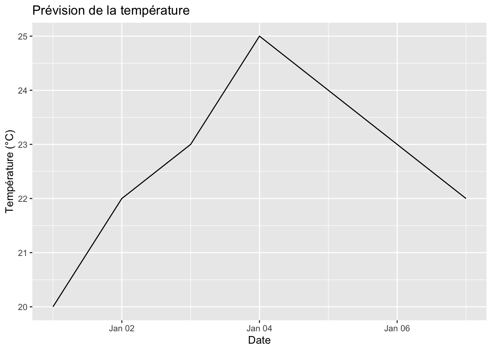

library(devtools)
library(httr2)
library(jsonlite)
library(usethis)
library(htmltools)
library(tibble)
library(purrr)
library(leaflet)
library(sf)
library(testthat)
library(tidygeocoder)
library(roxygen2)
library(lubridate)
library(dplyr)
library(ggplot2)Exercices - Semaine 4
Question 1
Installez les packages devtools, httr2, jsonlite.
Question 2
Dans une nouvelle session R, créer un nouveau projet de package intitulé olympicsWeather en utilisant la fonction create_package de la librairie usethis. Pourquoi n’est-il pas nécessaire d’installer explicitement usethis ?
usethis::create_package("olympicsWeather")Question 3
Créer un nouveau script R intitulé get_weather_forecast en utilisant la fonction usethis::use_r().
usethis::use_r("get_weather_forecast")✔ Setting active project to '/Users/ameldahmani/Library/Mobile Documents/com~apple~CloudDocs/M1 ECAP/R avancé/my_blog'
• Edit 'R/get_weather_forecast.R'Question 4
Sans implémenter la fonction pour l’instant, écrivez une requête d’api en utilisant la librairie httr2 que vous aurez préalablement installé.
• l’url de l’api open-api est la suivante: https://api.open-meteo.com/v1/forecast
• vous utiliserez les fonctions request, req_url_query, req_perform, resp_body_json pour passer la requête. Ces instructions peuvent se chaîner avec des pipes. La fonction request permet d’initialiser l’objet de request en passant l’url de l’api. La fonction req_url_query permet de passer différents paramètres à la requête, quand req_perform exécute la requête et récupère les résultats dans la session R. Enfin, la fonction resp_body_json extrait les données retournées en json du résultat de la requête. Vous pourrez utiliser la fonction tibble::as_tibble() pour convertir en tibble la table retournée.
• pour la première requête, nous souhaitons obtenir la prévision météo aux coordonnées géographiques c(48.85, 2.35)
•nous souhaitons obtenir les informations de températures, de températures ressenties, de probabilité de précipitation, et de quantités de précipitations. Indice, vous devrez passer le paramètre suivant (entre autres) hourly= c(“temperature_2m”, “apparent_temperature”, “precipitation_probability”, “precipitation”) à la fonction req_url_query
url <- "https://api.open-meteo.com/v1/forecast"
request(url) |>
req_url_query(latitude = 48.85,
longitude = 2.35,
hourly= c("temperature_2m",
"apparent_temperature",
"precipitation_probability",
"precipitation"),
.multi = "comma") |>
req_perform() |>
resp_body_json() |>
tibble::as_tibble()# A tibble: 5 × 9
latitude longitude generationtime_ms utc_offset_seconds timezone
<dbl> <dbl> <dbl> <int> <chr>
1 48.8 2.36 0.193 0 GMT
2 48.8 2.36 0.193 0 GMT
3 48.8 2.36 0.193 0 GMT
4 48.8 2.36 0.193 0 GMT
5 48.8 2.36 0.193 0 GMT
# ℹ 4 more variables: timezone_abbreviation <chr>, elevation <dbl>,
# hourly_units <named list>, hourly <named list>Question 5
Décrivez le résultat. Qu’avons nous obtenu suite à notre requête ? Quels paramètres souhaitons nous changer si nous voulons pouvoir récupérer les prévisions météo pour tous les sites des JOs ?
Nous avons obtenu un tibble qui contient plusieurs informations météorologiques pour un endroit spécifique situé à la latitude 48.85 et la longitude 2.85.
Ce tibble comporte cinq lignes, chacune représentant un aspect différent des données météorologiques.
Il est par ailleurs composé de neuf colonnes, incluant notamment les latitudes et longitudes, les unités des mesures horaires de chaque ligne, l’abréviation du fuseau horaire, le fuseau goraire, l’élévation de l’endroit, et une colonne appelée “hourly”, qui présente les horaires et qui est particulièrement intéressante. Dans cette colonne “hourly”, chaque paramètre météorologique est représenté par une liste, reflétant son évolution dans le temps à une adresse spécifique. Ainsi, pour chaque site, nous pouvons observer comment les différents paramètres météorologiques évoluent heure par heure.
Cependant, pour collecter les prévisions météorologiques pour tous les sites des Jeux Olympiques, il est nécessaire d’ajuster la longitude et la latitude correspondant à chaque site. Par conséquent, nous devons créer une fonction qui recueille initialement la latitude et la longitude pour chaque site olympique. Cette fonction nous permettra d’interroger l’API météo avec les coordonnées correctes pour obtenir les données météorologiques spécifiques à chaque site. En ajustant les coordonnées, nous pourrons ainsi obtenir les prévisions météorologiques pour tous les sites des Jeux Olympiques.
Question 6
L’objectif est donc d’implémenter une fonction get_weather_forecast pour récupérer une table de prévisions météo à une coordonnées GPS donnée. Avant d’implémenter cette fonction accessible à l’utilisateur, nous souhaitons implémenter plusieurs fonctions internes
Question 7
Fonction perform_request:
• la fonction perform request prend en entrée deux arguments: latitude et longitude
• elle effectue la requête sur l’api publique ci-dessus, et retourne le contenu du body sous forme d’une tibble (exactement comme dans la question 4)
#' @param latitude latitude (numeric)
#' @param longitude longitude (numeric)
#' @return le contenu du body sous forme d'un tibble de 5 lignes et 9 colonnes
perform_request <- function(latitude, longitude){
url <- "https://api.open-meteo.com/v1/forecast"
request(url) |>
req_url_query(latitude = latitude,
longitude = longitude,
hourly= c("temperature_2m",
"apparent_temperature",
"precipitation_probability",
"precipitation"),
.multi = "comma") |>
req_perform() |>
resp_body_json() |>
as_tibble()
}
resp <- perform_request(47.216671, -1.55)
resp# A tibble: 5 × 9
latitude longitude generationtime_ms utc_offset_seconds timezone
<dbl> <dbl> <dbl> <int> <chr>
1 47.2 -1.55 0.258 0 GMT
2 47.2 -1.55 0.258 0 GMT
3 47.2 -1.55 0.258 0 GMT
4 47.2 -1.55 0.258 0 GMT
5 47.2 -1.55 0.258 0 GMT
# ℹ 4 more variables: timezone_abbreviation <chr>, elevation <dbl>,
# hourly_units <named list>, hourly <named list>Notre fonction opère de manière efficace, permettant la récupération des données météorologiques de tout point en utilisant simplement ses coordonnées GPS, à savoir, la latitude et la longitude.
Question 8
Fonction unnest_response:
• les résultats obtenus après la requête n’étant pas bien formattés, il faut écrire une fonction pour transformer la forme de la tibble obtenue
• la fonction en entrée prendre une tibble au format issu de la requête
• et retournera les mêmes données au schema suivant:
– date_heure: heure au tz UTC
– tempature_celsius: données de température
– temperature_ressentie_celsius: données de température ressentie
– precipation_proba: probabilité de pluie
– precipitation: precipitation en mm
#' Décompacte les données de réponse des prévisions météorologiques.
#'
#' @param resp Résultat de la fonction précédente, tibble 5x9
#' @return Un nouveau tibble comprenant 168 observations et 5 variables
#' @export
unnest_response <- function(resp){
hourly_donnees <- resp$hourly
if (length(hourly_donnees) == 0) {
stop("Aucune donnée dans la colonne 'hourly'.")
}
output_tibble <- tibble(
"heure au tz UTC" = with_tz(unlist(hourly_donnees[[1]]), tzone = "UTC"),
"données de température" = unlist(hourly_donnees[[2]]),
"données de température ressentie" = unlist(hourly_donnees[[3]]),
"probabilité de pluie" = unlist(hourly_donnees[[4]]),
"precipitation en mm" = unlist(hourly_donnees[[5]])
)
return(output_tibble)
}
resp2 <- unnest_response(resp)
resp2# A tibble: 168 × 5
`heure au tz UTC` `données de température` données de température ressent…¹
<dttm> <dbl> <dbl>
1 2024-03-06 23:00:00 5.9 3.2
2 2024-03-06 23:00:00 5.4 2.5
3 2024-03-06 23:00:00 6.3 2.9
4 2024-03-06 23:00:00 5.7 2.6
5 2024-03-06 23:00:00 5.6 2.3
6 2024-03-06 23:00:00 4.8 1.4
7 2024-03-06 23:00:00 4.7 0.9
8 2024-03-06 23:00:00 4.7 0.9
9 2024-03-06 23:00:00 5.2 1.1
10 2024-03-06 23:00:00 7.4 2.6
# ℹ 158 more rows
# ℹ abbreviated name: ¹`données de température ressentie`
# ℹ 2 more variables: `probabilité de pluie` <int>, `precipitation en mm` <dbl>Question 9
Tests unitaires pour la fonction unnest_response:
• créez un script de tests en utilisant la fonction usethis::use_test(“unnest_response”)
• dans ce script, créez un jeu de données minimal pour tester le comportement de la fonction
• testez la fonction, en proposant plusieurs tests unitaires. Exemple de tests unitaires:
– testez que la fonction renvoie le bon nombre de lignes
– testez que les valeurs de la colonne temperature correspondent aux valeur proposées en entrée
– testez le nom des colonnes en sortie
– testez le nombre de colonnes en sortie
usethis::use_test("unnest_response")
testthat::test_dir('tests/testthat/')création du jeu de données minimal pour tester le comportement de la fonction
test_resp <- list(
hourly = list(
heure = ymd_hms("2024-03-05 08:00:00", tz = "UTC"),
temperature = c(10, 12, 14),
temperature_ressentie = c(8, 10, 12),
probabilite_pluie = c(0.1, 0.2, 0.3),
precipitation_mm = c(0, 0.5, 1)
)
)test que la fonction renvoie le bon nombre de lignes
test_that("La fonction renvoie le bon nombre de lignes", {
resp <- unnest_response(test_resp)
expect_equal(nrow(resp), 3)
})Test passed 🥇test que les valeurs de la colonne temperature correspondent aux valeur proposées en entrée
test_that("Les valeurs de la colonne temperature correspondent aux valeurs proposées en entrée", {
resp <- unnest_response(test_resp)
expect_equal(resp$`données de température`, c(10, 12, 14))
})Test passed 😀test le nom des colonnes en sortie
test_that("Le nom des colonnes en sortie est correct", {
resp <- unnest_response(test_resp)
expect_named(resp, c("heure au tz UTC", "données de température", "données de température ressentie", "probabilité de pluie", "precipitation en mm"))
})Test passed 🌈test le nombre de colonnes en sortie
test_that("Le nombre de colonnes en sortie est correct", {
resp <- unnest_response(test_resp)
expect_equal(ncol(resp), 5)
})Test passed 🌈La fonction “unnest_response” réussit tous les tests.
Question 10
Lors de la séance 1, nous avons développé un outil permettant de trouver les coordonnées GPS à partir d’un nom d’adresse (en utilisant le package tidygeocoder et la fonction reverse_geocode). Nous souhaitons que l’utilisateur puisse obtenir des prévisions météos à partir de:
• coordonnées GPS, i.e un vecteur numérique de taille 2
• un nom de site olympique ou une adresse. A partir du code de la séance 1, définissez une fonction address_to_gps convertissant une adresse en coordonnées gps sous la forme d’un vecteur numérique de taille 2.
Définir une fonction get_forecast générique, et deux implémentations get_forecast.character et get_forecast.numeric.
#' Convertit une adresse en coordonnées GPS.
#'
#' @param adresse Adresse à géocoder
#' @return Coordonnées GPS obtenues à partir de l'adresse
address_to_gps <- function(adresse) {
df_adresse <- data.frame("nom" = character(), addr = character(), stringsAsFactors = FALSE)
df_adresse <- rbind(df_adresse, data.frame(addr = adresse), stringsAsFactors = FALSE)
resultat_geocodage <- df_adresse |>
geocode(addr, method = 'arcgis')
df_adresse <- resultat_geocodage
return(df_adresse)
print(df_adresse)
}
resultat10 <- as_tibble(address_to_gps("Bâtiment Erdre, Chem. de la Censive du Tertre, 44300 Nantes"))Passing 1 address to the ArcGIS single address geocoderQuery completed in: 0.6 secondsresultat10# A tibble: 1 × 3
addr lat long
<chr> <dbl> <dbl>
1 Bâtiment Erdre, Chem. de la Censive du Tertre, 44300 Nantes 47.2 -1.55library(leaflet)
carte <- leaflet() |>
addTiles() |>
addMarkers(lng = resultat10$long, lat = resultat10$lat, popup = "IAE Nantes")
carteFonction générique pour obtenir les prévisions météo
get_forecast <- function(location, ...) {
UseMethod("get_forecast", location)
}Implémentation pour les caractères
get_forecast.character <- function(location, ...) {
coords <- address_to_gps(location)
return(perform_request(coords[2], coords[1], ...))
}Implémentation pour les vecteurs numériques (coordonnées GPS par exemple)
get_forecast.numeric <- function(location, ...) {
return(perform_request(location[2], location[1], ...))
}Pour valider l’exactitude des coordonnées de l’adresse renseignée, il convenait d’utiliser la fonction pour récupérer les coordonnées GPS associées à cette adresse. Ensuite, de visualier la cartographique qui affiche ces coordonnées sur une carte géographique. Cette visualisation a permis de vérifier visuellement si les coordonnées récupérées correspondent à l’emplacement attendu sur la carte.
Question 11
Implémentez une fonction interne get_gps_coordinate renvoyant des coordonnées x,y pour une adresse en utilisant les fonctions de la question 10 (ou de la semaine 1).
#' Obtient les coordonnées GPS à partir d'une adresse.
#'
#' @param adresse Adresse à géocoder
#' @return Coordonnées GPS obtenues à partir de l'adresse
#' @export
get_gps_coordinate <- function(adresse) {
resultat_geocodage <- address_to_gps(adresse)
coordonnees <- c(resultat_geocodage$lat, resultat_geocodage$long)
return(coordonnees)
print(coordonnees)
}
get_gps_coordinate("Bâtiment Erdre, Chem. de la Censive du Tertre, 44300 Nantes")Passing 1 address to the ArcGIS single address geocoderQuery completed in: 0.1 seconds[1] 47.243140 -1.554258Notre fonction renvoie avec précision les coordonnées du lieu demandé.
Question 12
Implémentez la fonction get_forecast.numeric. Cette fonction prend en entrée un argument xy, contenant un vecteur numérique de coordonnées x,y (latitude, longitude) de taille 2. Si cette condition n’est pas vérifiée, alors la fonction devra déclarer une erreur. La fonction appelera les deux fonctions perform_request et unnest_response avant de retourner la tibble de résultat.
#' Obtient les prévisions météorologiques à partir de coordonnées GPS.
#'
#' @param xy Vecteur numérique avec x les latitudes et y les longitudes
#' @return Un tibble 168x5
#' @export
get_forecast.numeric <- function(xy, ...) {
if (!is.numeric(xy) || length(xy) != 2) {
stop("Erreur ! L'argument xy doit être un vecteur numérique de taille 2 !")
}
response_table <- perform_request(xy[2], xy[1], ...)
unnested_table <- unnest_response(response_table)
return(unnested_table)
}
xy <- c(47.243140, -1.554258)
resultat12 <- get_forecast.numeric(xy)
resultat12# A tibble: 168 × 5
`heure au tz UTC` `données de température` données de température ressent…¹
<dttm> <dbl> <dbl>
1 2024-03-06 23:00:00 28.3 34.2
2 2024-03-06 23:00:00 28.2 34.3
3 2024-03-06 23:00:00 28.2 34.4
4 2024-03-06 23:00:00 28.1 34.5
5 2024-03-06 23:00:00 28.1 34.7
6 2024-03-06 23:00:00 28 34.3
7 2024-03-06 23:00:00 28.1 34.1
8 2024-03-06 23:00:00 28 34.4
9 2024-03-06 23:00:00 28 35.2
10 2024-03-06 23:00:00 28 35
# ℹ 158 more rows
# ℹ abbreviated name: ¹`données de température ressentie`
# ℹ 2 more variables: `probabilité de pluie` <int>, `precipitation en mm` <dbl>Notre fonction est efficace puisqu’elle signale correctement les erreurs lorsque le vecteur n’est ni numérique ni de taille 2, et récupère avec succès les données météorologiques pour les coordonnées fournies lorsqu’elles sont un vecteur numérique de taille 2.
Question 13
Implémentez la fonction get_forecast.character. Cette fonction prend en entrée un argument address, de type character, de taille 1. Si cette condition n’est pas vérifiée, alors la fonction devra déclarer une erreur. La fonction appelera les deux fonctions address_to_gps puis la fonction get_forecast en passant le résultat de l’appel à address_to_gps.
#' Prévisions météorologiques à partir d'une adresse.
#'
#' @param adresse Adresse à géocoder
#' @return Les prévisions météorologiques obtenues
#' @export
forecast.character <- function(adresse) {
if (!is.character(adresse) || length(adresse) != 1) {
stop("L'argument address doit être de type character et de taille 1.")
}
}
#' Obtient les prévisions météorologiques à partir d'une adresse.
#'
#' @param adresse Adresse à géocoder
#' @return Les prévisions météorologiques obtenues
#' @export
get_forecast.character <- function(adresse) {
forecast.character(adresse)
coordinates <- get_gps_coordinate(adresse)
resultat_previsions <- perform_request(latitude = coordinates[1], longitude = coordinates[2])
resultat_traitement <- unnest_response(resultat_previsions)
return(resultat_traitement)
}
get_forecast.character("46, rue Proudhon, 93210, Saint-Denis, France")Passing 1 address to the ArcGIS single address geocoderQuery completed in: 0.9 seconds# A tibble: 168 × 5
`heure au tz UTC` `données de température` données de température ressent…¹
<dttm> <dbl> <dbl>
1 2024-03-06 23:00:00 4.7 2.7
2 2024-03-06 23:00:00 4.1 1.7
3 2024-03-06 23:00:00 3.7 1.5
4 2024-03-06 23:00:00 3 0.7
5 2024-03-06 23:00:00 2.7 0.4
6 2024-03-06 23:00:00 2.5 -0.1
7 2024-03-06 23:00:00 2.4 0
8 2024-03-06 23:00:00 2.6 0.1
9 2024-03-06 23:00:00 3.7 1.4
10 2024-03-06 23:00:00 6.6 4.2
# ℹ 158 more rows
# ℹ abbreviated name: ¹`données de température ressentie`
# ℹ 2 more variables: `probabilité de pluie` <int>, `precipitation en mm` <dbl>get_forecast.numeric(c(47.243140, -1.554258))# A tibble: 168 × 5
`heure au tz UTC` `données de température` données de température ressent…¹
<dttm> <dbl> <dbl>
1 2024-03-06 23:00:00 28.3 34.2
2 2024-03-06 23:00:00 28.2 34.3
3 2024-03-06 23:00:00 28.2 34.4
4 2024-03-06 23:00:00 28.1 34.5
5 2024-03-06 23:00:00 28.1 34.7
6 2024-03-06 23:00:00 28 34.3
7 2024-03-06 23:00:00 28.1 34.1
8 2024-03-06 23:00:00 28 34.4
9 2024-03-06 23:00:00 28 35.2
10 2024-03-06 23:00:00 28 35
# ℹ 158 more rows
# ℹ abbreviated name: ¹`données de température ressentie`
# ℹ 2 more variables: `probabilité de pluie` <int>, `precipitation en mm` <dbl>La fonction opère correctement.
Question 14
Documentez la fonction get_forecast en utilisant les balises Roxygen appropriées.
#' get_forecast
#'
#' Cette fonction générique permet d'obtenir des prévisions météorologiques en fonction d'une localisation.
#' Elle a deux implémentations spécifiques :
#' - get_forecast.character : pour obtenir des prévisions à partir d'un nom de site olympique ou d'une adresse.
#' - get_forecast.numeric : pour obtenir des prévisions à partir des coordonnées GPS.
#'
#' @param location Emplacement pour obtenir les prévisions (Adresse, nom de site olympique ou coordonnées GPS).
#' - Pour get_forecast.character : un caractère de taille 1.
#' - Pour get_forecast.numeric : un vecteur numérique de taille 2 (latitude, longitude).
#' @return Un tibble contenant les prévisions météorologiques.
#' @examples
#' Exemples d'utilisation :
#' \dontrun{
#' # Exemples d'utilisation
#' get_forecast("Nantes")
#' get_forecast(c(48.85, 2.35))
#' }
#'
#' @seealso
#' \code{\link{get_forecast.character}}, \code{\link{get_forecast.numeric}},
#' \code{\link{perform_request}}, \code{\link{unnest_response}}
#'
#' @export
get_forecast <- function(x) {
if (is.numeric(x)) {
get_forecast.numeric(x)
} else if (is.character(x)) {
get_forecast.character(x)
} else {
stop("L'argument doit être de type numeric (coordonnées) ou character (adresse).")
}
}
resultat14 <-get_forecast("District de Huairou, Chine, 101406")Passing 1 address to the ArcGIS single address geocoderQuery completed in: 0.1 secondsprint(resultat14)# A tibble: 168 × 5
`heure au tz UTC` `données de température` données de température ressent…¹
<dttm> <dbl> <dbl>
1 2024-03-06 23:00:00 1.4 -2.2
2 2024-03-06 23:00:00 3.3 -0.3
3 2024-03-06 23:00:00 5.4 1.4
4 2024-03-06 23:00:00 7.2 3.4
5 2024-03-06 23:00:00 9.1 6.2
6 2024-03-06 23:00:00 10.9 7.9
7 2024-03-06 23:00:00 10.9 7.4
8 2024-03-06 23:00:00 11.2 6
9 2024-03-06 23:00:00 10.9 5.5
10 2024-03-06 23:00:00 10.5 5.5
# ℹ 158 more rows
# ℹ abbreviated name: ¹`données de température ressentie`
# ℹ 2 more variables: `probabilité de pluie` <int>, `precipitation en mm` <dbl>resultat14bis <-get_forecast(c(47.243140, -1.554258))
print(resultat14bis)# A tibble: 168 × 5
`heure au tz UTC` `données de température` données de température ressent…¹
<dttm> <dbl> <dbl>
1 2024-03-06 23:00:00 28.3 34.2
2 2024-03-06 23:00:00 28.2 34.3
3 2024-03-06 23:00:00 28.2 34.4
4 2024-03-06 23:00:00 28.1 34.5
5 2024-03-06 23:00:00 28.1 34.7
6 2024-03-06 23:00:00 28 34.3
7 2024-03-06 23:00:00 28.1 34.1
8 2024-03-06 23:00:00 28 34.4
9 2024-03-06 23:00:00 28 35.2
10 2024-03-06 23:00:00 28 35
# ℹ 158 more rows
# ℹ abbreviated name: ¹`données de température ressentie`
# ℹ 2 more variables: `probabilité de pluie` <int>, `precipitation en mm` <dbl>Question 15
Mettez à jour le fichier DESCRIPTION. Assurez-vous d’avoir un NAMESPACE à jour en utilisant devtools::document.
library(olympicsWeather)
Attaching package: 'olympicsWeather'The following objects are masked _by_ '.GlobalEnv':
forecast.character, get_forecast, get_forecast.character,
get_forecast.numeric, get_gps_coordinate, perform_request,
unnest_responsehelp("get_forecast")Question bonus
Quelle stratégie employeriez-vous pour fournir une sortie visuelle aux utilisateurs ? Essayez de proposer une fonction dans le package pour rendre visuelle la sortie du package.
#' Visualise les emplacements des prévisions météorologiques sur une carte Leaflet
#'
#' @param forecast_locations Un data frame contenant les emplacements des prévisions météorologiques avec au moins deux colonnes : long (longitude) et lat (latitude).
#' @return Une carte Leaflet avec des marqueurs pour les emplacements des prévisions météorologiques.
#' @export
visualiser_carte <- function(forecast_locations) {
require(leaflet)
ma_carte <- leaflet() %>%
addTiles() %>%
addMarkers(lng = forecast_locations$long, lat = forecast_locations$lat)
return(ma_carte)
}
#exemple d'utilisation
exemple1 <- data.frame(
long = c(-0.1278, -73.935242, 151.2093),
lat = c(51.5074, 40.730610, -33.8688)
)
ma_carte <- visualiser_carte(exemple1)
ma_carte#' Visualise les prévisions météorologiques
#'
#' @param forecast_data Un data frame contenant les données de prévisions météorologiques avec au moins deux colonnes : date et température.
#' @return Un objet ggplot représentant les prévisions météorologiques.
#' @export
visualiser_previsions <- function(forecast_data) {
require(ggplot2)
ggplot(data = forecast_data, aes(x = date, y = temperature)) +
geom_line() +
labs(title = "Prévision de la température", x = "Date", y = "Température (°C)")
}
#exemple d'utilisation
exemple2 <- data.frame(
date = seq(as.Date("2022-01-01"), by = "day", length.out = 7),
temperature = c(20, 22, 23, 25, 24, 23, 22)
)
mon_graph <- visualiser_previsions(exemple2)
print(mon_graph)